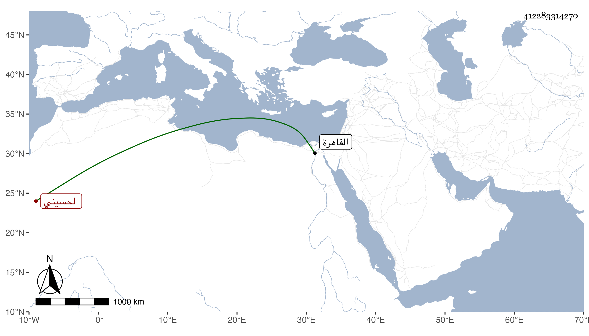

0902Sakhawi.DawLamic.ITO20230111-ara1.EIS1600.412283314270
Biography ID: 412283314270
48
أحمد بن علي بن أبي بكر الشهاب الحسيني سكنا الترجمان أحد الصوفية بخانقاه سعيد السعداء . ولد قبل القرن بكثير بل الظن أنه قبل سنة سبعين وكان يذكر أنه كتب عن الزين العراقي من أماليه . وروى عن الشيخ عمر السمنودي ما أنشده إياه وكأنه من نظمه :
| يا أيها الراضي بأحكامنا | لا بد أن تحمد عقبى الرضا |
| فوض إلينا وابق مستسلما | فالراحة العظمى لمن فوضا |
في أبيات . كتب عنه البقاعي في سنة سبع وثلاثين وقال أنه مات بالقاهرة في حدود سنة أربعين .
